All materials25 materials
Schematics counts the schematics whose recipe asks for the material, and Total for one of each adds up what crafting every one of them once would take (each apparel rank counts once). Every recipe, with its amounts, is on the Schematics page.
| Material | Group | Stack | Schematics | Total for one of each | |
|---|---|---|---|---|---|
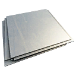 | Aluminum | Raw materials | 20 | 15 | 127 |
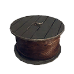 | Copper | Raw materials | 20 | 13 | 107 |
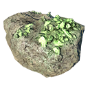 | Gold | Raw materials | 20 | – | – |
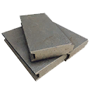 | Lead | Raw materials | 20 | 28 | 308 |
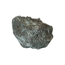 | Phosphorus | Raw materials | 20 | 11 | 1,883 |
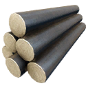 | Titanium | Raw materials | 20 | 6 | 130 |
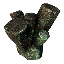 | Tungsten | Raw materials | 20 | – | – |
| Uranium | Raw materials | 20 | 1 | 1 | |
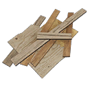 | Wood | Raw materials | 20 | 21 | 356 |
| Accelerant | Fabricated | 20 | 7 | 149 | |
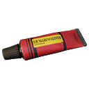 | Adhesive | Fabricated | 25 | 53 | 817 |
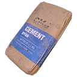 | Cement | Fabricated | 20 | – | – |
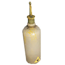 | Electrolyte | Fabricated | 20 | 8 | 29 |
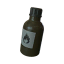 | Ethanol | Fabricated | 20 | 20 | 936 |
| Explosive | Fabricated | 20 | 56 | 536 | |
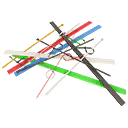 | Plastic | Fabricated | 20 | 23 | 548 |
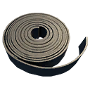 | Rubber | Fabricated | 20 | 16 | 509 |
| Textile | Fabricated | 20 | 22 | 481 | |
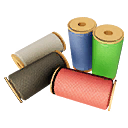 | Thread | Fabricated | 20 | 77 | 1,446 |
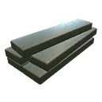 | Refined Aluminum Alloy | Alloys | 20 | 16 | 81 |
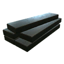 | Refined Tungsten Alloy | Alloys | 20 | 20 | 39 |
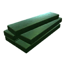 | Refined Uranium Alloy | Alloys | 20 | 16 | 20 |
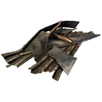 | Steel | Alloys | 20 | 47 | 1,179 |
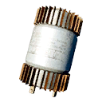 | Ultracapacitors | Components | 20 | – | – |
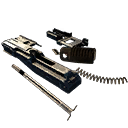 | Weapon Parts | Components | 20 | – | – |
- Raw materials
- Basic metals, wood and phosphorus, picked up in the world or salvaged from machines.
- Fabricated
- Processed materials such as adhesive, textile and explosive.
- Alloys
- Steel and the three refined alloys.
- Components
- Ultracapacitors and weapon parts.
Tips
- By total amount the most wanted materials are Phosphorus (1,883 in 11 schematics), Thread (1,446 in 77 schematics), Steel (1,179 in 47 schematics), Ethanol (936 in 20 schematics). Keep a good stock of them.
- Thread is in the most recipes (77), 75 of them apparel upgrades.
- No schematic in the current game files asks for Gold, Tungsten, Cement, Ultracapacitors and Weapon Parts.
- Refined Aluminum Alloy is only asked for by apparel rank 4 (5 schematics), apparel rank 5 (5 schematics), experimental (6 schematics).
- Refined Tungsten Alloy is only asked for by apparel rank 4 (4 schematics), apparel rank 5 (4 schematics), experimental (8 schematics), companion (4 schematics).
- Refined Uranium Alloy is only asked for by apparel rank 4 (4 schematics), apparel rank 5 (4 schematics), experimental (8 schematics).
Placed materials by region447 pickups
Material pickups at fixed spots in the world files, per region; click a number for the map. Only 14 of the 25 materials are placed by hand at all, and in small numbers.
| Material | Archipelago | South Coast | Farmlands | Forest | Mountains | Marshlands | North Coast | Total |
|---|---|---|---|---|---|---|---|---|
| Steel | 4 | 1 | 8 | 58 | 4 | 36 | 8 | 119 |
| Wood | 7 | 7 | 8 | 67 | 11 | 7 | 4 | 111 |
| Rubber | – | 4 | 3 | 33 | – | 8 | 5 | 53 |
| Textile | 1 | – | 5 | 35 | – | 4 | 3 | 48 |
| Adhesive | 1 | 2 | 3 | 12 | 2 | 9 | 2 | 31 |
| Thread | – | 1 | 3 | 19 | – | 4 | 2 | 29 |
| Plastic | – | 1 | 1 | 16 | – | 5 | 2 | 25 |
| Copper | 2 | – | 1 | 5 | 1 | 1 | 1 | 11 |
| Electrolyte | 1 | 1 | – | 1 | 2 | 2 | – | 7 |
| Tungsten | – | – | – | 3 | – | 2 | – | 5 |
| Aluminum | – | – | 1 | – | – | – | 2 | 3 |
| Accelerant | – | – | 2 | – | – | – | 1 | 3 |
| Lead | – | – | – | – | – | 1 | – | 1 |
| Titanium | – | 1 | – | – | – | – | – | 1 |
From the game files
Slag (stack 20) looks like a material, but the game files list it under Other items, and no schematic uses it.
From the game files
The game's item list gives Gold the Uranium icon, so the two look the same in the inventory.